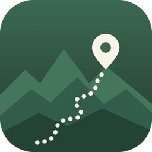

No locations on this phone yet. Tap one from your sheet below.
Name the area, then paste or import its trail list. Each trail gets its own numbered card.
Talk through the trail. Record as many messages as you like, then tap Translate to text.